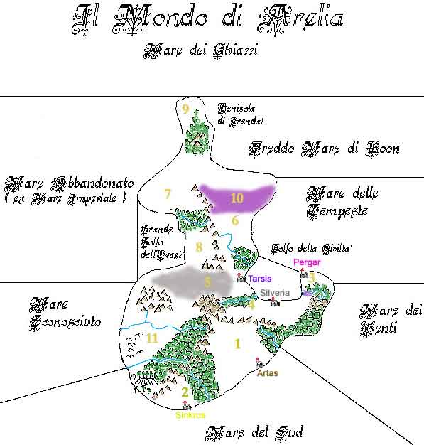

1 Granducato di Trisengard 2 Ducato di Southland 3 Impero Scuro 4 Repubblica Silveriana 5 Regno di Tarsis e Terre Selvagge 6 Zona Est dell'Impero del Nordor 7 Zona Ovest dell'Impero del Nordor 8 Territorio di Irk e Goran (Simelia) 9 Irendal 10 Grande Palude della Fine 11 Territori dei Semi-Umani
1 Granducato di Trisengard
2 Ducato di Southland
3 Impero Scuro
4 Repubblica Silveriana
5 Regno di Tarsis e Terre Selvagge
6 Zona Est dell'Impero del Nordor
7 Zona Ovest dell'Impero del Nordor
8 Territorio di Irk e Goran (Simelia)
9 Irendal
10 Grande Palude della Fine
11 Territori dei Semi-Umani